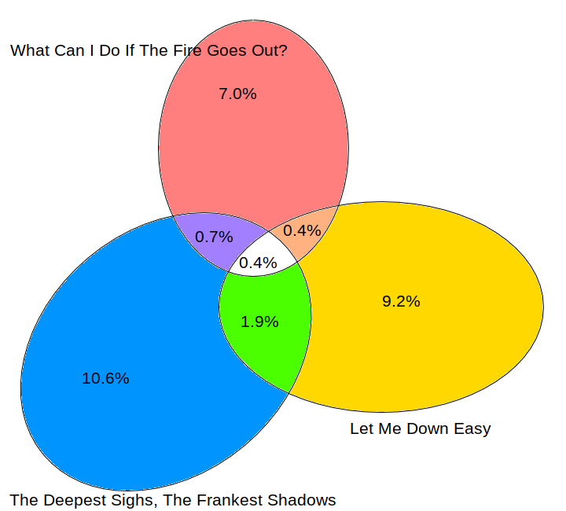
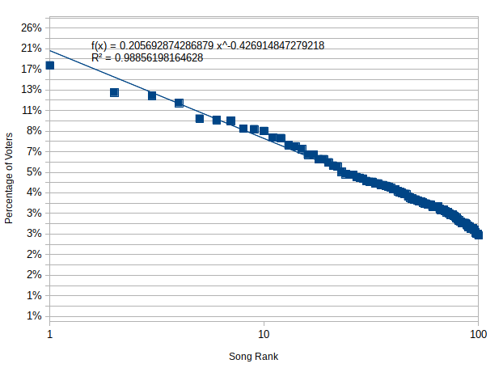

I See Red, I See Red, I See Red
The results are now in, with HUMBLE taking the top spot. For the purposes of this post, which will be mostly about Gang of Youths, the important thing to note is that the instagram sample does not completely reflect the final outcome. Instagrammers narrowly preferred the song “The Deepest of Sighs, The Frankest of Shadows” to “Let me Down Easy”, whereas the later was ranked three spots higher in the real countdown (5 vs 2). We will disregard this, because I don’t think it will affect the point I wish to make. I’ll refer to these songs as Sighs and Easy.
What then is that point? As you well know, Gang of Youths took out the 2nd, 5th, 10th and 41st spots. Kendrick Lamar grabbed top honours, but also 34th, 92nd, and 97th. If the fans of Gang of Youths had coordinated, could they have overcome Compton’s own?
It is not quite as simple as adding the votes together for the various songs however, because voters may only vote for a song once. Suppose that there is a person who voted for both Sighs and Easy. We can’t change their vote for Easy to a vote for Sigh. This brings us to our last post wherein we looked at how many people voted for multiple songs by the same artist. Looking at just Gang of Youths voters, we get the following Venn diagram.

The percentages are the percentage of voters who voted for that song. For example this diagram shows that 1.9% of people voted for both Sighs and Easy. Given that 15.9% of people voted for HUMBLE, even taking into account the double voters, a measure of coordination could have pushed either Sighs or Easy to the top. You would have need to convince about third of people who voted for Easy to swap to Sighs.
What does this data imply about previous artists with multiple high placing songs? It says that almost always they could have won if their fans had been strategic. I had previously thought that there should be a reliable formula to predict the percentage of votes for a song based on its rank, but I did not have the data to test this hypothesis. Now I do. Plotting rank vs votes for this year (with the right scaling) gives this excellently straight line.

The formulas in the chart tell us two things. The \(R^2\) value is a measure of how good the straight line is. A value of 0.98 (out of 1) is fantastic, and usually only seen in physics and chemistry where there is a law of nature dictating events. The other formula is messier, but tells us how to calculate the percentage of the vote from the rank. Cleaned up, the formula is \[ \text{Percentage} =\frac{20.6\%} {(\text{Rank})^{0.4}}. \] Let’s estimate conservatively that the number of people voting multiple times for the same artist is at most 10% of the people who voted for that band. Then a number 2 song would win if we converted the votes from any song in the top 25, a number 3 song could win with the votes from any top 10 song, and a number 4 song could win with the help of song number 5 or 6. Then over the last ten years, the winner would have changed twice
- 2015 - Tame Impala was 4th and 5th.
- 2013 - Lorde was 2nd and 12th, and Arctic Monkeys were 4th and 6th. Either one could have beaten Vance Joy’s Riptide, with Royals having the stronger claim to the throne.
- 2009 - MGMT took 2nd and 5th place, which would have been enough to beat Kings of Leon’s Sex on Fire. However, Kings of Leon took 1st and 3rd, so combined they would have beaten MGMT to stay on top.